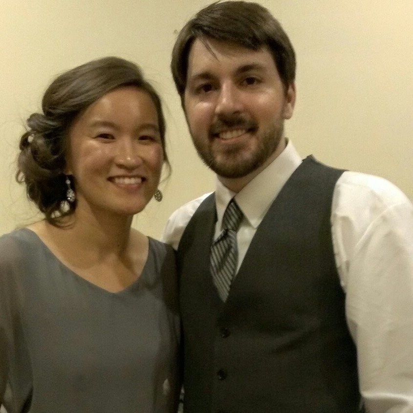

An inquisitive professional and divergent thinker with an interest in developing and implementing new systems to increase efficiencies and improve operational performance. Particularly interested in the periphery of industry, business, organizations, systems, and processes.
Recently relocated to Wilmington, DE.
Projects
Note: Any of the hosted demo websites may be sleeping to save resources. If so, it will take a few minutes for the server to start after you've clicked to access the application.
Leash & Collar
Website for dog walking company built on Sinatra with Ruby and Java Script
News Website
Content management system for a news company where reporters can publish their stories and subscribers can comment on stories. Built on Rails using Ruby.
Staff-Login: kns@kns Password: 123
Subscriber-Login: jon@nycda.com Password: 123